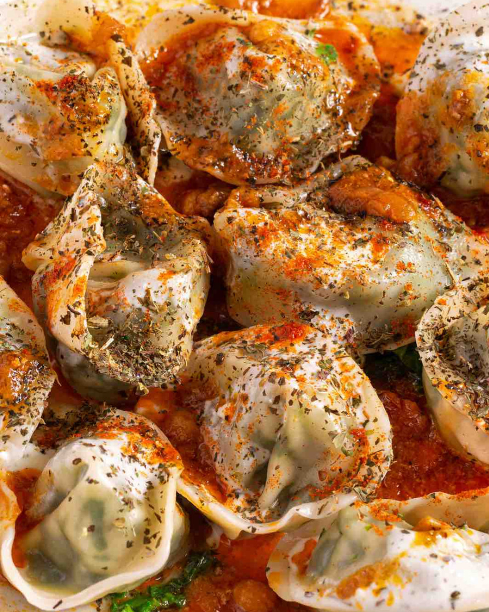
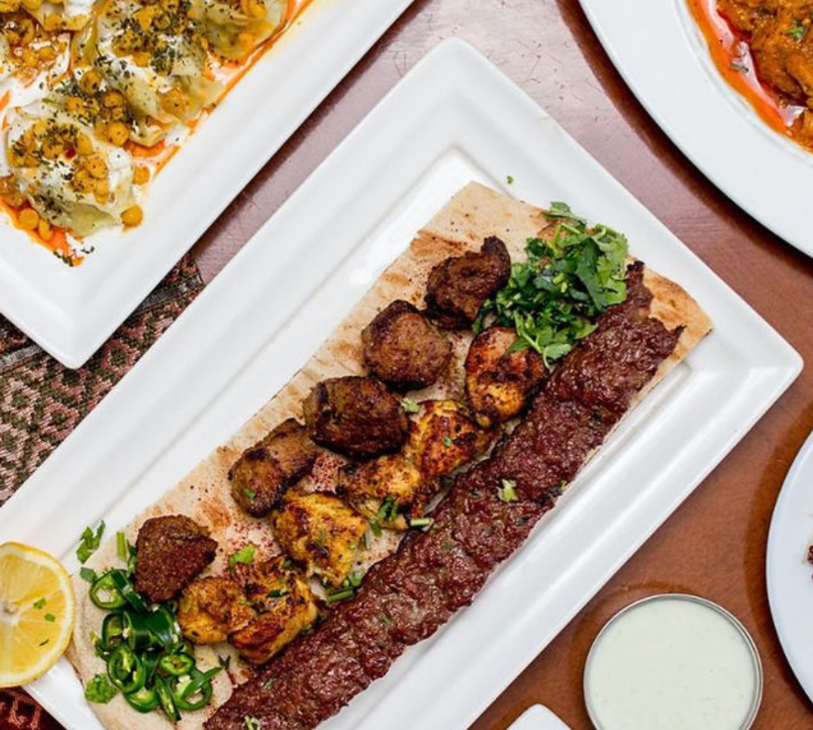
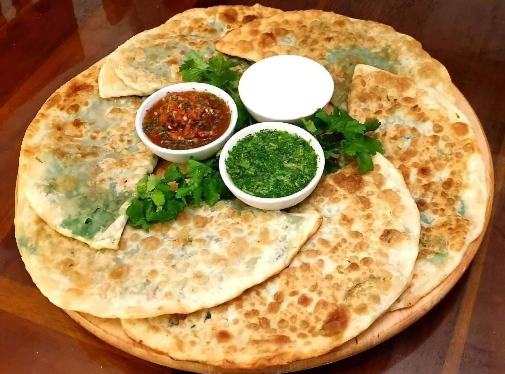

Popular Afghan Dishes
Discover some of the most popular and delicious dishes you must try while visiting Kabul.




Taste the Delicious Flavors of Afghan Cuisine
Discover some of the most popular and delicious dishes you must try while visiting Kabul.



Qabuli Pulao is the most famous traditional dish of Afghanistan. It is made with rice, tender meat, carrots, raisins, and delicious spices. People love to cook it for weddings and special family gatherings. This dish shows Afghan hospitality and you should definitely try it.
Close ✖Mantu is a popular Afghan dumpling filled with spiced minced meat and onions. It is steamed and served with yogurt sauce and lentils on top. Families prepare Mantu for guests because it is special and delicious. Its soft texture and rich flavor make it a favorite traditional dish.
Close ✖Afghan Kebab is a favorite street food and party dish across the country. It is made with grilled meat seasoned with simple but tasty spices. People enjoy kebab at gatherings, picnics, and celebrations. Its smoky flavor and juicy texture make it one of the most loved Afghan foods.
Close ✖Bolani is a delicious Afghan flatbread filled with potatoes or greens. It is fried until crispy and served with yogurt or chutney. Bolani is common during family meals and festive occasions. Its crispy outside and soft filling make it a favorite snack.
Close ✖